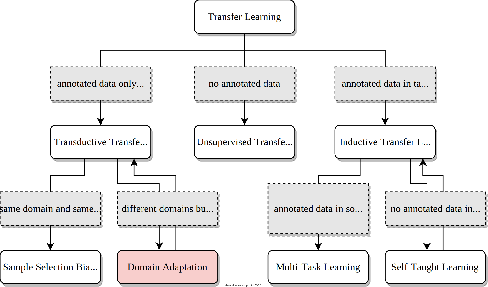
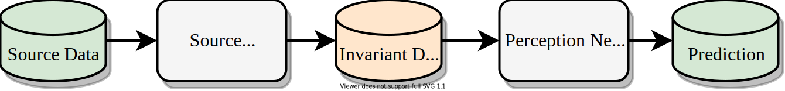
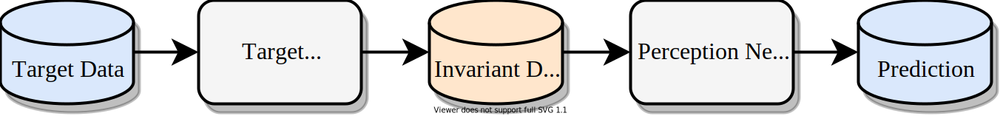
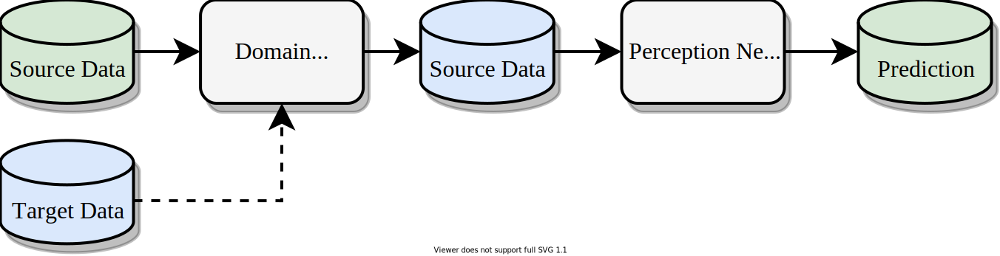
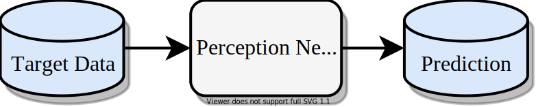
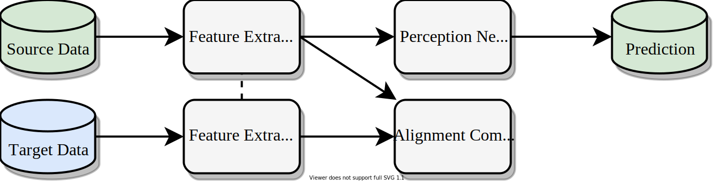
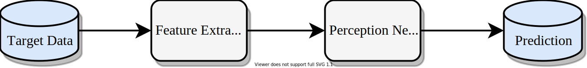

| Larissa T. Triess1,2 | Mariella Dreissig1 | Christoph B. Rist1 | J. Marius Zöllner2,3 |
|
1Mercedes-Benz AG Stuttgart (Germany) |
2Karlsruhe Institute of Technology Karlsruhe (Germany) |
3Research Center for Information Technology Karlsruhe (Germany) |
|
In 2021 IEEE Intelligent Vehicles Symposium (IV) Workshop on Autonomy at Scale |
| [Paper] |
|  |
|
Overview of Transfer Learning: Domain adaptation is a type of transductive transfer learning where the same task is performed in different, but related domains with annotated data only in the source domain. (Figure adapted from [Pan2010]). |
|
Scalable systems for automated driving have to reliably cope with an open-world setting.
This means, the perception systems are exposed to drastic domain shifts, like changes in weather conditions, time-dependent aspects, or geographic regions.
Covering all domains with annotated data is impossible because of the endless variations of domains and the time-consuming and expensive annotation process.
Furthermore, fast development cycles of the system additionally introduce hardware changes, such as sensor types and vehicle setups, and the required knowledge transfer from simulation.
To enable scalable automated driving, it is therefore crucial to address these domain shifts in a robust and efficient manner. Over the last years, a vast amount of different domain adaptation techniques evolved. There already exists a number of survey papers for domain adaptation on camera images, however, a survey for LiDAR perception is absent. Nevertheless, LiDAR is a vital sensor for automated driving that provides detailed 3D scans of the vehicle's surroundings. To stimulate future research, this paper presents a comprehensive review of recent progress in domain adaptation methods and formulates interesting research questions specifically targeted towards LiDAR perception. |
| The focus of this paper is to give an overview on DA methods that specifically address deep learning based LiDAR perception and discuss their unique features, use-cases, and challenges. The paper is organized as follows: |
| Section 2 gives an introduction to common LiDAR perception tasks and the terminology of DA. The section also includes an overview on typical baselines, datasets, DA applications, and metrics. Section 3 categorizes common DA approaches for LiDAR. In Section 4, we discuss different aspects of the presented approaches and give an outlook on interesting research directions. |
| A domain-invariant representation is a hand-crafted approach to move different domains into a common representation. Figure 3 shows that this approach is basically a data pre-processing after which a regular perception pipeline starts. It is mostly used to account for the sensor-to-sensor domain shift and receives special attention in LiDAR research. Available sensors vary in their resolution and sampling patterns while resulting point clouds are additionally influenced by the mounting position and the recording rate of the sensor. Consequently, the acquired data vary considerably in their statistics and distributions. This data distribution mismatch makes it unfeasible to apply the same model to different sensors in a naive way. Therefore, many simple DA methods either align the sampling differences in 2D space or use representations in 3D space that are less prone to domain differences. |
|  |
| (a) Training |
|  |
| (b) Testing |
| Figure 3: The data from the source domain at train-time (a) and the data from the target domain at test-time (b) are both converted into a hand-crafted common representation prior to being fed to the perception pipeline. |
| Domain mapping aims at transferring the data of one domain to another domain and is most often used in sim-to-real and dataset-to-dataset applications. Figure 4 shows a typical setup for domain mapping. Annotated source data is usually transformed to appear like target data, creating a labeled pseudo-target dataset. With the transformed data, a perception network is trained which can then be applied to target data at test time. For images, domain mapping is usually done adversarially and at pixel-level in the form of image-to-image translation with conditional GANs. Similar principles apply to LiDAR data, however, there also exists a number of methods that do not rely on adversarial training. |
|  |
| (a) Training |
|  |
| (b) Testing |
| Figure 4: This is the most commonly used configuration for domain mapping. During training (a) the labeled source data is conditionally (dashed line) mapped to the target domain where a perception network is trained. At test time (b), the trained perception network can directly be applied to the target data. |
| State-of-the-art methods in domain-invariant feature learning employ a training procedure that encourages the model to learn a feature representation that is independent of the domain. This is done by finding or constructing a common representation space for the source and target domain. In contrast to domain-invariant data representations, these approaches are not hand-crafted but use learned features. If the classifier model performs well on the source domain using a domain-invariant feature representation, then the classifier may generalize well to the target domain. The basic principle is depicted in Figure 5. |
|  |
| (a) Training |
|  |
| (b) Testing |
| Figure 5: A feature extractor network and an alignment component learn a domain-invariant feature encoding (a). At test time (b), the domain-invariant feature extractor is applied to the target data. |
| This work was presented at the Workshop on Autonomy at Scale (WS52), IV2021. The research leading to these results is funded by the German Federal Ministry for Economic Affairs and Energy within the project "KI Delta Learning" (Förderkennzeichen 19A19013A). |
{kind=link}
{kind=link}
{kind=link}
{kind=link}
{kind=link}
{kind=link}
{kind=link}